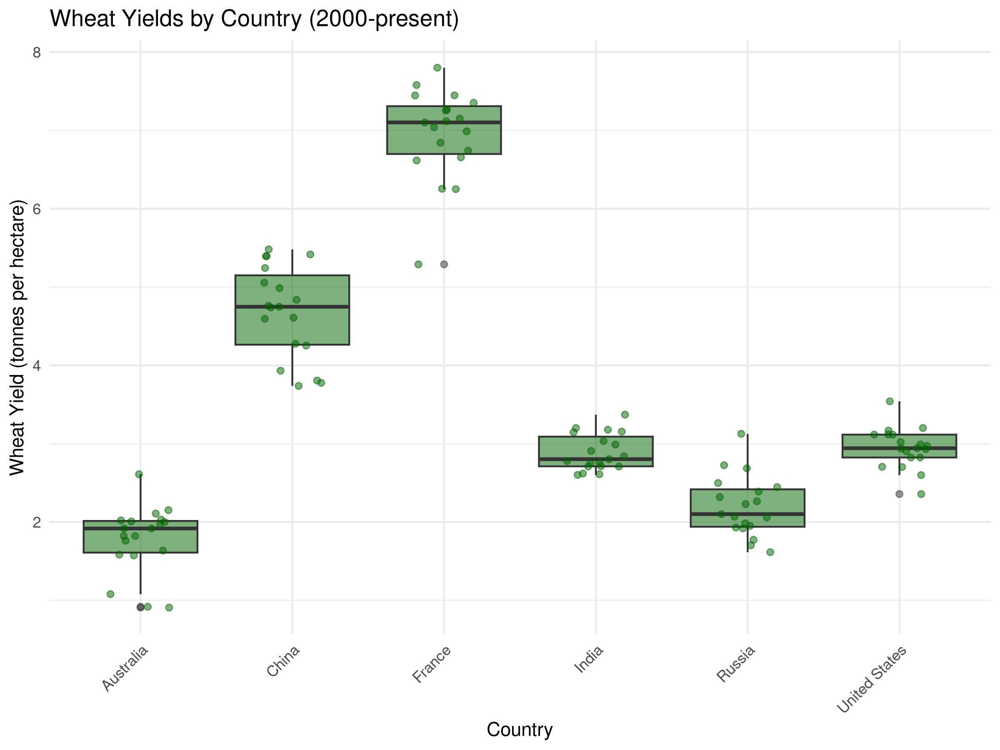
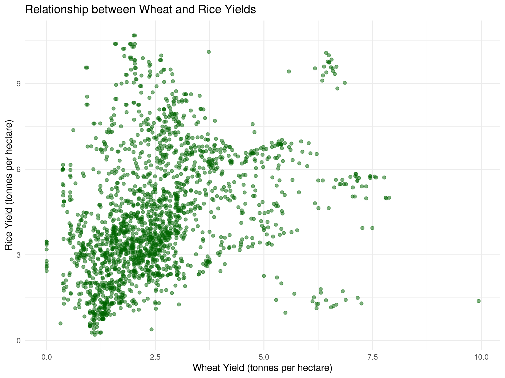
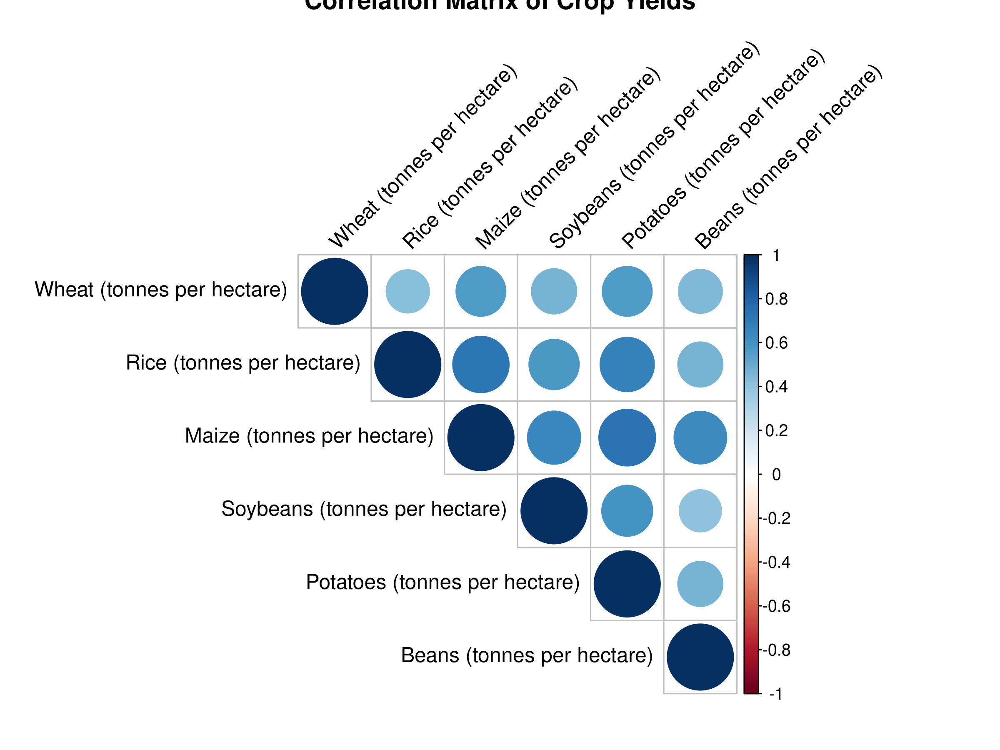
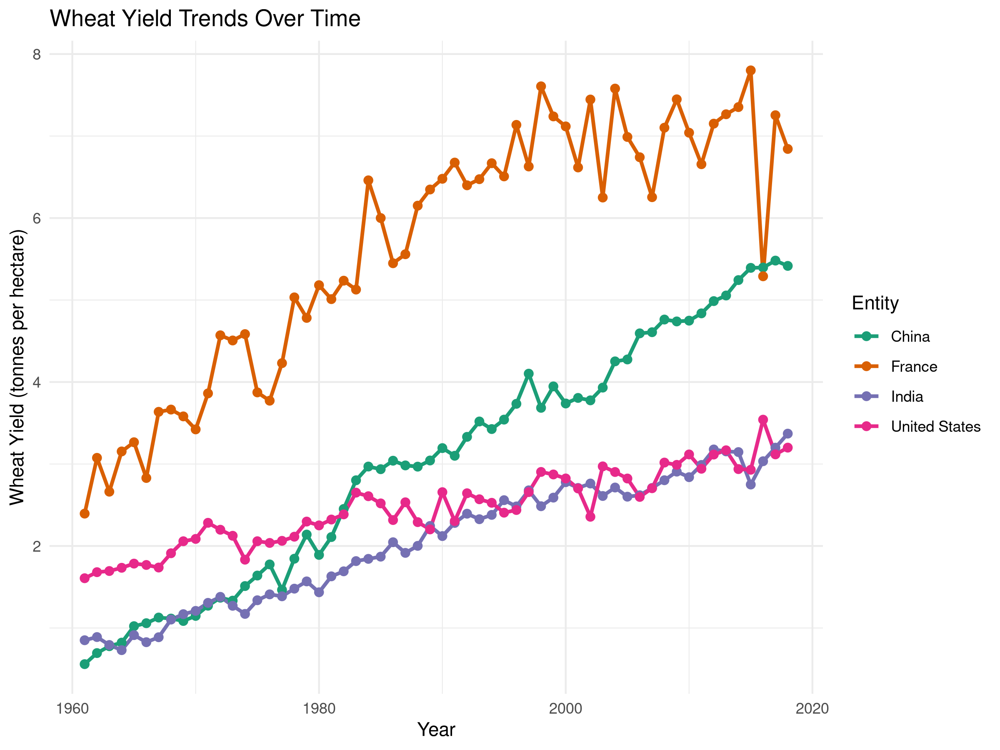

Exploratory Data Analysis (EDA) is a critical first step in any data analysis project. In this chapter, you’ll learn how to systematically explore your data to understand its structure, identify patterns, detect anomalies, and generate hypotheses for further investigation.
3.2 The Purpose of Exploratory Data Analysis
Exploratory Data Analysis serves several important purposes in natural sciences research:
Understanding Data Structure: Gain insights into the basic properties of your dataset
Checking Data Quality: Identify missing values, outliers, and potential errors
Discovering Patterns: Detect relationships, trends, and distributions
Generating Hypotheses: Develop questions and hypotheses for formal testing
Informing Analysis Choices: Guide decisions about appropriate statistical methods
3.3 Summarizing Data
3.3.1 Descriptive Statistics
Descriptive statistics provide a concise summary of your data’s central tendency, dispersion, and shape:
Code
# Load necessary librarieslibrary(tidyverse)# Load the crop yield datasetcrop_yields <-read_csv("../data/agriculture/crop_yields.csv")# View the first few rowshead(crop_yields)
# A tibble: 6 × 14
Entity Code Year `Wheat (tonnes per hectare)` Rice (tonnes per hectar…¹
<chr> <chr> <dbl> <dbl> <dbl>
1 Afghanistan AFG 1961 1.02 1.52
2 Afghanistan AFG 1962 0.974 1.52
3 Afghanistan AFG 1963 0.832 1.52
4 Afghanistan AFG 1964 0.951 1.73
5 Afghanistan AFG 1965 0.972 1.73
6 Afghanistan AFG 1966 0.867 1.52
# ℹ abbreviated name: ¹`Rice (tonnes per hectare)`
# ℹ 9 more variables: `Maize (tonnes per hectare)` <dbl>,
# `Soybeans (tonnes per hectare)` <dbl>,
# `Potatoes (tonnes per hectare)` <dbl>, `Beans (tonnes per hectare)` <dbl>,
# `Peas (tonnes per hectare)` <dbl>, `Cassava (tonnes per hectare)` <dbl>,
# `Barley (tonnes per hectare)` <dbl>,
# `Cocoa beans (tonnes per hectare)` <dbl>, …
Code
# Get summary statistics for wheat yieldswheat_summary <- crop_yields %>%filter(!is.na(`Wheat (tonnes per hectare)`)) %>%summarize(Mean =mean(`Wheat (tonnes per hectare)`, na.rm =TRUE),Median =median(`Wheat (tonnes per hectare)`, na.rm =TRUE),StdDev =sd(`Wheat (tonnes per hectare)`, na.rm =TRUE),Min =min(`Wheat (tonnes per hectare)`, na.rm =TRUE),Max =max(`Wheat (tonnes per hectare)`, na.rm =TRUE),Q1 =quantile(`Wheat (tonnes per hectare)`, 0.25, na.rm =TRUE),Q3 =quantile(`Wheat (tonnes per hectare)`, 0.75, na.rm =TRUE) )# Display the summary statisticsknitr::kable(wheat_summary, caption ="Summary Statistics for Global Wheat Yields")
Summary Statistics for Global Wheat Yields
Mean
Median
StdDev
Min
Max
Q1
Q3
2.434914
1.99
1.687949
0
10.6677
1.228
3.1245
Code
# Visualize the distribution of wheat yieldsggplot(crop_yields, aes(x =`Wheat (tonnes per hectare)`)) +geom_histogram(bins =30, fill ="forestgreen", color ="black", alpha =0.7) +labs(title ="Distribution of Global Wheat Yields",x ="Wheat Yield (tonnes per hectare)",y ="Frequency") +theme_minimal()
Code
# Identify top wheat-producing countries (by average yield)top_wheat_countries <- crop_yields %>%filter(!is.na(`Wheat (tonnes per hectare)`)) %>%group_by(Entity) %>%summarize(Avg_Yield =mean(`Wheat (tonnes per hectare)`, na.rm =TRUE)) %>%arrange(desc(Avg_Yield)) %>%head(10)# Display the top countriesknitr::kable(top_wheat_countries, caption ="Top 10 Countries by Average Wheat Yield")
Top 10 Countries by Average Wheat Yield
Entity
Avg_Yield
Belgium
8.544200
Netherlands
7.030172
Ireland
6.829840
United Kingdom
6.366400
Denmark
6.175285
Luxembourg
5.977411
Germany
5.893978
Europe, Western
5.723267
France
5.645341
Northern Europe
5.589988
3.3.2 Frequency Tables
Frequency tables are useful for understanding the distribution of categorical variables:
Code
# Let's create a categorical variable based on wheat yield levelscrop_yields_with_categories <- crop_yields %>%filter(!is.na(`Wheat (tonnes per hectare)`)) %>%mutate(yield_category =case_when(`Wheat (tonnes per hectare)`<2~"Low",`Wheat (tonnes per hectare)`>=2&`Wheat (tonnes per hectare)`<4~"Medium",`Wheat (tonnes per hectare)`>=4~"High" ))# Frequency table for yield categoriestable(crop_yields_with_categories$yield_category)
Histograms and density plots help visualize the distribution of continuous variables:
Code
# Histogram of wheat yieldsggplot(crop_yields, aes(x =`Wheat (tonnes per hectare)`)) +geom_histogram(bins =30, fill ="darkgreen", color ="white", na.rm =TRUE) +labs(title ="Histogram of Wheat Yields", x ="Wheat Yield (tonnes per hectare)", y ="Frequency") +theme_minimal()
Code
# Density plotggplot(crop_yields, aes(x =`Wheat (tonnes per hectare)`)) +geom_density(fill ="darkgreen", alpha =0.5, na.rm =TRUE) +labs(title ="Density Plot of Wheat Yields", x ="Wheat Yield (tonnes per hectare)", y ="Density") +theme_minimal()
Code
# Histogram with density overlayggplot(crop_yields, aes(x =`Wheat (tonnes per hectare)`)) +geom_histogram(aes(y = ..density..), bins =30, fill ="darkgreen", color ="white", na.rm =TRUE) +geom_density(color ="darkgreen", linewidth =1, na.rm =TRUE) +labs(title ="Distribution of Wheat Yields", x ="Wheat Yield (tonnes per hectare)", y ="Density") +theme_minimal()
3.4.2 Box Plots
Box plots are excellent for comparing distributions across groups:
Code
# Select a few major countries for comparisonmajor_wheat_producers <-c("United States", "China", "India", "Russia", "France", "Australia")# Filter data for these countries and recent yearsrecent_wheat_data <- crop_yields %>%filter(Entity %in% major_wheat_producers, Year >=2000,!is.na(`Wheat (tonnes per hectare)`))# Box plot of wheat yields by countryggplot(recent_wheat_data, aes(x = Entity, y =`Wheat (tonnes per hectare)`)) +geom_boxplot(fill ="darkgreen", alpha =0.7) +labs(title ="Wheat Yields by Country (2000-present)", x ="Country", y ="Wheat Yield (tonnes per hectare)") +theme_minimal() +theme(axis.text.x =element_text(angle =45, hjust =1))
Code
# Enhanced box plot with jittered pointsggplot(recent_wheat_data, aes(x = Entity, y =`Wheat (tonnes per hectare)`)) +geom_boxplot(fill ="darkgreen", alpha =0.5) +geom_jitter(width =0.2, alpha =0.5, color ="darkgreen") +labs(title ="Wheat Yields by Country (2000-present)", x ="Country", y ="Wheat Yield (tonnes per hectare)") +theme_minimal() +theme(axis.text.x =element_text(angle =45, hjust =1))

3.4.3 Bar Charts
Bar charts are useful for visualizing categorical data:
Code
# Calculate average wheat yield by country for the last decaderecent_avg_yields <- crop_yields %>%filter(Year >=2010, !is.na(`Wheat (tonnes per hectare)`)) %>%group_by(Entity) %>%summarize(avg_wheat_yield =mean(`Wheat (tonnes per hectare)`, na.rm =TRUE)) %>%arrange(desc(avg_wheat_yield)) %>%head(10) # Top 10 countries# Bar chart of average wheat yieldsggplot(recent_avg_yields, aes(x =reorder(Entity, avg_wheat_yield), y = avg_wheat_yield)) +geom_bar(stat ="identity", fill ="darkgreen") +labs(title ="Top 10 Countries by Average Wheat Yield (2010-present)", x ="Country", y ="Average Wheat Yield (tonnes per hectare)") +theme_minimal() +theme(axis.text.x =element_text(angle =45, hjust =1))
3.5 Exploring Relationships
3.5.1 Scatter Plots
Scatter plots help visualize relationships between two continuous variables:
Code
# Let's compare wheat and rice yieldscrop_yields_filtered <- crop_yields %>%filter(!is.na(`Wheat (tonnes per hectare)`), !is.na(`Rice (tonnes per hectare)`)) %>%filter(Year >=2000)# Basic scatter plotggplot(crop_yields_filtered, aes(x =`Wheat (tonnes per hectare)`, y =`Rice (tonnes per hectare)`)) +geom_point(alpha =0.5, color ="darkgreen") +labs(title ="Relationship between Wheat and Rice Yields",x ="Wheat Yield (tonnes per hectare)", y ="Rice Yield (tonnes per hectare)") +theme_minimal()
Code
# Scatter plot with color by continent (we'll need to add continent information)# For demonstration, let's create a simple mapping for a few countriescontinent_mapping <-tibble(Entity =c("United States", "Canada", "Mexico", "China", "India", "Japan", "Germany", "France", "United Kingdom", "Brazil", "Argentina", "Chile","Egypt", "Nigeria", "South Africa","Australia", "New Zealand"),Continent =c(rep("North America", 3), rep("Asia", 3), rep("Europe", 3), rep("South America", 3),rep("Africa", 3),rep("Oceania", 2)))# Join with our datasetcrop_yields_with_continent <- crop_yields_filtered %>%inner_join(continent_mapping, by ="Entity")# Scatter plot with color by continentggplot(crop_yields_with_continent, aes(x =`Wheat (tonnes per hectare)`, y =`Rice (tonnes per hectare)`, color = Continent)) +geom_point(size =3, alpha =0.7) +labs(title ="Relationship between Wheat and Rice Yields by Continent",x ="Wheat Yield (tonnes per hectare)", y ="Rice Yield (tonnes per hectare)") +theme_minimal()
3.5.2 Correlation Analysis
Correlation analysis quantifies the strength and direction of relationships between variables:
Code
# Select numeric columns for correlation analysiscrop_numeric <- crop_yields %>%select(`Wheat (tonnes per hectare)`, `Rice (tonnes per hectare)`, `Maize (tonnes per hectare)`, `Soybeans (tonnes per hectare)`, `Potatoes (tonnes per hectare)`, `Beans (tonnes per hectare)`) %>%na.omit()# Correlation matrixcor_matrix <-cor(crop_numeric)round(cor_matrix, 2)
Wheat (tonnes per hectare)
Wheat (tonnes per hectare) 1.00
Rice (tonnes per hectare) 0.43
Maize (tonnes per hectare) 0.57
Soybeans (tonnes per hectare) 0.47
Potatoes (tonnes per hectare) 0.57
Beans (tonnes per hectare) 0.44
Rice (tonnes per hectare)
Wheat (tonnes per hectare) 0.43
Rice (tonnes per hectare) 1.00
Maize (tonnes per hectare) 0.73
Soybeans (tonnes per hectare) 0.58
Potatoes (tonnes per hectare) 0.67
Beans (tonnes per hectare) 0.46
Maize (tonnes per hectare)
Wheat (tonnes per hectare) 0.57
Rice (tonnes per hectare) 0.73
Maize (tonnes per hectare) 1.00
Soybeans (tonnes per hectare) 0.65
Potatoes (tonnes per hectare) 0.74
Beans (tonnes per hectare) 0.63
Soybeans (tonnes per hectare)
Wheat (tonnes per hectare) 0.47
Rice (tonnes per hectare) 0.58
Maize (tonnes per hectare) 0.65
Soybeans (tonnes per hectare) 1.00
Potatoes (tonnes per hectare) 0.59
Beans (tonnes per hectare) 0.41
Potatoes (tonnes per hectare)
Wheat (tonnes per hectare) 0.57
Rice (tonnes per hectare) 0.67
Maize (tonnes per hectare) 0.74
Soybeans (tonnes per hectare) 0.59
Potatoes (tonnes per hectare) 1.00
Beans (tonnes per hectare) 0.46
Beans (tonnes per hectare)
Wheat (tonnes per hectare) 0.44
Rice (tonnes per hectare) 0.46
Maize (tonnes per hectare) 0.63
Soybeans (tonnes per hectare) 0.41
Potatoes (tonnes per hectare) 0.46
Beans (tonnes per hectare) 1.00
Code
# Visualize correlation matrixlibrary(corrplot)corrplot(cor_matrix, method ="circle", type ="upper", tl.col ="black", tl.srt =45,title ="Correlation Matrix of Crop Yields")
3.5.3 Pair Plots
Pair plots provide a comprehensive view of relationships between multiple variables:
Code
# Basic pair plotpairs(crop_numeric, pch =19, col ="darkgreen")

Code
# Enhanced pair plot with GGallylibrary(GGally)ggpairs(crop_numeric) +theme_minimal() +labs(title ="Relationships Between Different Crop Yields")
3.6 Identifying Outliers and Anomalies
3.6.1 Box Plots for Outlier Detection
Box plots can help identify potential outliers:
Code
# Box plot to identify outliers in wheat yieldggplot(crop_yields, aes(y =`Wheat (tonnes per hectare)`)) +geom_boxplot(fill ="darkgreen", alpha =0.7, na.rm =TRUE) +labs(title ="Box Plot of Wheat Yields with Potential Outliers",y ="Wheat Yield (tonnes per hectare)") +theme_minimal()

Code
# Identify potential outlierswheat_outliers <- crop_yields %>%filter(!is.na(`Wheat (tonnes per hectare)`)) %>%mutate(q1 =quantile(`Wheat (tonnes per hectare)`, 0.25),q3 =quantile(`Wheat (tonnes per hectare)`, 0.75),iqr = q3 - q1,lower_bound = q1 -1.5* iqr,upper_bound = q3 +1.5* iqr,is_outlier =`Wheat (tonnes per hectare)`< lower_bound |`Wheat (tonnes per hectare)`> upper_bound ) %>%filter(is_outlier) %>%select(Entity, Year, `Wheat (tonnes per hectare)`)# Display the outliershead(wheat_outliers, 10)
Agricultural data often contains important temporal patterns:
Code
# Select a few countries for time series analysiscountries_for_ts <-c("United States", "China", "India", "France")# Filter data for these countrieswheat_ts_data <- crop_yields %>%filter(Entity %in% countries_for_ts, !is.na(`Wheat (tonnes per hectare)`)) %>%filter(Year >=1960)# Time series plotggplot(wheat_ts_data, aes(x = Year, y =`Wheat (tonnes per hectare)`, color = Entity)) +geom_line(linewidth =1) +geom_point(size =2) +labs(title ="Wheat Yield Trends Over Time",x ="Year",y ="Wheat Yield (tonnes per hectare)") +theme_minimal() +scale_color_brewer(palette ="Dark2")

3.8 Missing Data Analysis
Understanding patterns of missing data is crucial:
Code
# Check for missing values in each columncolSums(is.na(crop_yields))
Entity Code
0 1919
Year Wheat (tonnes per hectare)
0 4974
Rice (tonnes per hectare) Maize (tonnes per hectare)
4604 2301
Soybeans (tonnes per hectare) Potatoes (tonnes per hectare)
7114 3059
Beans (tonnes per hectare) Peas (tonnes per hectare)
5066 6840
Cassava (tonnes per hectare) Barley (tonnes per hectare)
5887 6342
Cocoa beans (tonnes per hectare) Bananas (tonnes per hectare)
8466 4166
Code
# Visualize missing data patternsif(requireNamespace("naniar", quietly =TRUE)) {library(naniar)# Create a visualization of missing datagg_miss_var(crop_yields)# Create a matrix showing missing data patternsvis_miss(crop_yields[, c("Entity", "Year", "Wheat (tonnes per hectare)", "Rice (tonnes per hectare)", "Maize (tonnes per hectare)")])} else {message("The 'naniar' package is not installed. Install it with install.packages('naniar') to visualize missing data patterns.")# Alternative: simple summary of missing data missing_summary <-sapply(crop_yields, function(x) sum(is.na(x))) missing_df <-data.frame(Variable =names(missing_summary),Missing_Count = missing_summary,Missing_Percent =round(missing_summary /nrow(crop_yields) *100, 2) )# Display the summary missing_df <- missing_df[order(-missing_df$Missing_Count), ]head(missing_df, 10)}
Variable Missing_Count
Cocoa beans (tonnes per hectare) Cocoa beans (tonnes per hectare) 8466
Soybeans (tonnes per hectare) Soybeans (tonnes per hectare) 7114
Peas (tonnes per hectare) Peas (tonnes per hectare) 6840
Barley (tonnes per hectare) Barley (tonnes per hectare) 6342
Cassava (tonnes per hectare) Cassava (tonnes per hectare) 5887
Beans (tonnes per hectare) Beans (tonnes per hectare) 5066
Wheat (tonnes per hectare) Wheat (tonnes per hectare) 4974
Rice (tonnes per hectare) Rice (tonnes per hectare) 4604
Bananas (tonnes per hectare) Bananas (tonnes per hectare) 4166
Potatoes (tonnes per hectare) Potatoes (tonnes per hectare) 3059
Missing_Percent
Cocoa beans (tonnes per hectare) 64.75
Soybeans (tonnes per hectare) 54.41
Peas (tonnes per hectare) 52.31
Barley (tonnes per hectare) 48.50
Cassava (tonnes per hectare) 45.02
Beans (tonnes per hectare) 38.75
Wheat (tonnes per hectare) 38.04
Rice (tonnes per hectare) 35.21
Bananas (tonnes per hectare) 31.86
Potatoes (tonnes per hectare) 23.40
3.9 Summary
This chapter has demonstrated various techniques for exploratory data analysis using a real agricultural dataset. We’ve covered:
Computing and interpreting descriptive statistics
Creating and analyzing frequency tables
Visualizing distributions with histograms, density plots, and box plots
Exploring relationships with scatter plots and correlation analysis
Identifying outliers and anomalies
Analyzing time series patterns
Examining missing data
These techniques provide a foundation for understanding your data before proceeding to more advanced analyses. By thoroughly exploring your data, you can make informed decisions about appropriate statistical methods and generate meaningful hypotheses for testing.
3.10 Exercises
Load the plant biodiversity dataset from docs/data/ecology/biodiversity.csv and perform a comprehensive exploratory analysis.
Create a histogram and density plot for another crop in the dataset. How does its distribution compare to wheat?
Investigate the relationship between potato yields and latitude (you’ll need to find or create a dataset with latitude information).
Identify countries with the most significant improvement in crop yields over time.
Create a time series plot showing the ratio of wheat to rice yields over time for major producing countries.
Perform the same exploratory analyses in R for the spatial dataset in docs/data/geography/spatial.csv.
Source Code
# Exploratory Data Analysis## IntroductionExploratory Data Analysis (EDA) is a critical first step in any data analysis project. In this chapter, you'll learn how to systematically explore your data to understand its structure, identify patterns, detect anomalies, and generate hypotheses for further investigation.## The Purpose of Exploratory Data AnalysisExploratory Data Analysis serves several important purposes in natural sciences research:1. **Understanding Data Structure**: Gain insights into the basic properties of your dataset2. **Checking Data Quality**: Identify missing values, outliers, and potential errors3. **Discovering Patterns**: Detect relationships, trends, and distributions4. **Generating Hypotheses**: Develop questions and hypotheses for formal testing5. **Informing Analysis Choices**: Guide decisions about appropriate statistical methods## Summarizing Data### Descriptive StatisticsDescriptive statistics provide a concise summary of your data's central tendency, dispersion, and shape:```{r}# Load necessary librarieslibrary(tidyverse)# Load the crop yield datasetcrop_yields <-read_csv("../data/agriculture/crop_yields.csv")# View the first few rowshead(crop_yields)# Get summary statistics for wheat yieldswheat_summary <- crop_yields %>%filter(!is.na(`Wheat (tonnes per hectare)`)) %>%summarize(Mean =mean(`Wheat (tonnes per hectare)`, na.rm =TRUE),Median =median(`Wheat (tonnes per hectare)`, na.rm =TRUE),StdDev =sd(`Wheat (tonnes per hectare)`, na.rm =TRUE),Min =min(`Wheat (tonnes per hectare)`, na.rm =TRUE),Max =max(`Wheat (tonnes per hectare)`, na.rm =TRUE),Q1 =quantile(`Wheat (tonnes per hectare)`, 0.25, na.rm =TRUE),Q3 =quantile(`Wheat (tonnes per hectare)`, 0.75, na.rm =TRUE) )# Display the summary statisticsknitr::kable(wheat_summary, caption ="Summary Statistics for Global Wheat Yields")# Visualize the distribution of wheat yieldsggplot(crop_yields, aes(x =`Wheat (tonnes per hectare)`)) +geom_histogram(bins =30, fill ="forestgreen", color ="black", alpha =0.7) +labs(title ="Distribution of Global Wheat Yields",x ="Wheat Yield (tonnes per hectare)",y ="Frequency") +theme_minimal()# Identify top wheat-producing countries (by average yield)top_wheat_countries <- crop_yields %>%filter(!is.na(`Wheat (tonnes per hectare)`)) %>%group_by(Entity) %>%summarize(Avg_Yield =mean(`Wheat (tonnes per hectare)`, na.rm =TRUE)) %>%arrange(desc(Avg_Yield)) %>%head(10)# Display the top countriesknitr::kable(top_wheat_countries, caption ="Top 10 Countries by Average Wheat Yield")```### Frequency TablesFrequency tables are useful for understanding the distribution of categorical variables:```{r}# Let's create a categorical variable based on wheat yield levelscrop_yields_with_categories <- crop_yields %>%filter(!is.na(`Wheat (tonnes per hectare)`)) %>%mutate(yield_category =case_when(`Wheat (tonnes per hectare)`<2~"Low",`Wheat (tonnes per hectare)`>=2&`Wheat (tonnes per hectare)`<4~"Medium",`Wheat (tonnes per hectare)`>=4~"High" ))# Frequency table for yield categoriestable(crop_yields_with_categories$yield_category)# Proportionsprop.table(table(crop_yields_with_categories$yield_category))# Create a decade variable for temporal analysiscrop_yields_with_categories <- crop_yields_with_categories %>%mutate(decade =floor(Year /10) *10)# Two-way frequency table: yield category by decadeyield_decade_table <-table(crop_yields_with_categories$yield_category, crop_yields_with_categories$decade)yield_decade_table# Convert to proportions (by row)prop.table(yield_decade_table, margin =1)```## Visualizing Distributions### Histograms and Density PlotsHistograms and density plots help visualize the distribution of continuous variables:```{r}# Histogram of wheat yieldsggplot(crop_yields, aes(x =`Wheat (tonnes per hectare)`)) +geom_histogram(bins =30, fill ="darkgreen", color ="white", na.rm =TRUE) +labs(title ="Histogram of Wheat Yields", x ="Wheat Yield (tonnes per hectare)", y ="Frequency") +theme_minimal()# Density plotggplot(crop_yields, aes(x =`Wheat (tonnes per hectare)`)) +geom_density(fill ="darkgreen", alpha =0.5, na.rm =TRUE) +labs(title ="Density Plot of Wheat Yields", x ="Wheat Yield (tonnes per hectare)", y ="Density") +theme_minimal()# Histogram with density overlayggplot(crop_yields, aes(x =`Wheat (tonnes per hectare)`)) +geom_histogram(aes(y = ..density..), bins =30, fill ="darkgreen", color ="white", na.rm =TRUE) +geom_density(color ="darkgreen", linewidth =1, na.rm =TRUE) +labs(title ="Distribution of Wheat Yields", x ="Wheat Yield (tonnes per hectare)", y ="Density") +theme_minimal()```### Box PlotsBox plots are excellent for comparing distributions across groups:```{r}# Select a few major countries for comparisonmajor_wheat_producers <-c("United States", "China", "India", "Russia", "France", "Australia")# Filter data for these countries and recent yearsrecent_wheat_data <- crop_yields %>%filter(Entity %in% major_wheat_producers, Year >=2000,!is.na(`Wheat (tonnes per hectare)`))# Box plot of wheat yields by countryggplot(recent_wheat_data, aes(x = Entity, y =`Wheat (tonnes per hectare)`)) +geom_boxplot(fill ="darkgreen", alpha =0.7) +labs(title ="Wheat Yields by Country (2000-present)", x ="Country", y ="Wheat Yield (tonnes per hectare)") +theme_minimal() +theme(axis.text.x =element_text(angle =45, hjust =1))# Enhanced box plot with jittered pointsggplot(recent_wheat_data, aes(x = Entity, y =`Wheat (tonnes per hectare)`)) +geom_boxplot(fill ="darkgreen", alpha =0.5) +geom_jitter(width =0.2, alpha =0.5, color ="darkgreen") +labs(title ="Wheat Yields by Country (2000-present)", x ="Country", y ="Wheat Yield (tonnes per hectare)") +theme_minimal() +theme(axis.text.x =element_text(angle =45, hjust =1))```### Bar ChartsBar charts are useful for visualizing categorical data:```{r}# Calculate average wheat yield by country for the last decaderecent_avg_yields <- crop_yields %>%filter(Year >=2010, !is.na(`Wheat (tonnes per hectare)`)) %>%group_by(Entity) %>%summarize(avg_wheat_yield =mean(`Wheat (tonnes per hectare)`, na.rm =TRUE)) %>%arrange(desc(avg_wheat_yield)) %>%head(10) # Top 10 countries# Bar chart of average wheat yieldsggplot(recent_avg_yields, aes(x =reorder(Entity, avg_wheat_yield), y = avg_wheat_yield)) +geom_bar(stat ="identity", fill ="darkgreen") +labs(title ="Top 10 Countries by Average Wheat Yield (2010-present)", x ="Country", y ="Average Wheat Yield (tonnes per hectare)") +theme_minimal() +theme(axis.text.x =element_text(angle =45, hjust =1))```## Exploring Relationships### Scatter PlotsScatter plots help visualize relationships between two continuous variables:```{r}# Let's compare wheat and rice yieldscrop_yields_filtered <- crop_yields %>%filter(!is.na(`Wheat (tonnes per hectare)`), !is.na(`Rice (tonnes per hectare)`)) %>%filter(Year >=2000)# Basic scatter plotggplot(crop_yields_filtered, aes(x =`Wheat (tonnes per hectare)`, y =`Rice (tonnes per hectare)`)) +geom_point(alpha =0.5, color ="darkgreen") +labs(title ="Relationship between Wheat and Rice Yields",x ="Wheat Yield (tonnes per hectare)", y ="Rice Yield (tonnes per hectare)") +theme_minimal()# Scatter plot with color by continent (we'll need to add continent information)# For demonstration, let's create a simple mapping for a few countriescontinent_mapping <-tibble(Entity =c("United States", "Canada", "Mexico", "China", "India", "Japan", "Germany", "France", "United Kingdom", "Brazil", "Argentina", "Chile","Egypt", "Nigeria", "South Africa","Australia", "New Zealand"),Continent =c(rep("North America", 3), rep("Asia", 3), rep("Europe", 3), rep("South America", 3),rep("Africa", 3),rep("Oceania", 2)))# Join with our datasetcrop_yields_with_continent <- crop_yields_filtered %>%inner_join(continent_mapping, by ="Entity")# Scatter plot with color by continentggplot(crop_yields_with_continent, aes(x =`Wheat (tonnes per hectare)`, y =`Rice (tonnes per hectare)`, color = Continent)) +geom_point(size =3, alpha =0.7) +labs(title ="Relationship between Wheat and Rice Yields by Continent",x ="Wheat Yield (tonnes per hectare)", y ="Rice Yield (tonnes per hectare)") +theme_minimal()```### Correlation AnalysisCorrelation analysis quantifies the strength and direction of relationships between variables:```{r}# Select numeric columns for correlation analysiscrop_numeric <- crop_yields %>%select(`Wheat (tonnes per hectare)`, `Rice (tonnes per hectare)`, `Maize (tonnes per hectare)`, `Soybeans (tonnes per hectare)`, `Potatoes (tonnes per hectare)`, `Beans (tonnes per hectare)`) %>%na.omit()# Correlation matrixcor_matrix <-cor(crop_numeric)round(cor_matrix, 2)# Visualize correlation matrixlibrary(corrplot)corrplot(cor_matrix, method ="circle", type ="upper", tl.col ="black", tl.srt =45,title ="Correlation Matrix of Crop Yields")```### Pair PlotsPair plots provide a comprehensive view of relationships between multiple variables:```{r}# Basic pair plotpairs(crop_numeric, pch =19, col ="darkgreen")# Enhanced pair plot with GGallylibrary(GGally)ggpairs(crop_numeric) +theme_minimal() +labs(title ="Relationships Between Different Crop Yields")```## Identifying Outliers and Anomalies### Box Plots for Outlier DetectionBox plots can help identify potential outliers:```{r}# Box plot to identify outliers in wheat yieldggplot(crop_yields, aes(y =`Wheat (tonnes per hectare)`)) +geom_boxplot(fill ="darkgreen", alpha =0.7, na.rm =TRUE) +labs(title ="Box Plot of Wheat Yields with Potential Outliers",y ="Wheat Yield (tonnes per hectare)") +theme_minimal()# Identify potential outlierswheat_outliers <- crop_yields %>%filter(!is.na(`Wheat (tonnes per hectare)`)) %>%mutate(q1 =quantile(`Wheat (tonnes per hectare)`, 0.25),q3 =quantile(`Wheat (tonnes per hectare)`, 0.75),iqr = q3 - q1,lower_bound = q1 -1.5* iqr,upper_bound = q3 +1.5* iqr,is_outlier =`Wheat (tonnes per hectare)`< lower_bound |`Wheat (tonnes per hectare)`> upper_bound ) %>%filter(is_outlier) %>%select(Entity, Year, `Wheat (tonnes per hectare)`)# Display the outliershead(wheat_outliers, 10)```### Z-Scores for Outlier DetectionZ-scores can also help identify outliers:```{r}# Calculate z-scores for wheat yieldswheat_z_scores <- crop_yields %>%filter(!is.na(`Wheat (tonnes per hectare)`)) %>%mutate(wheat_mean =mean(`Wheat (tonnes per hectare)`),wheat_sd =sd(`Wheat (tonnes per hectare)`),z_score = (`Wheat (tonnes per hectare)`- wheat_mean) / wheat_sd,is_extreme =abs(z_score) >3 )# Display extreme values (z-score > 3 or < -3)wheat_extremes <- wheat_z_scores %>%filter(is_extreme) %>%select(Entity, Year, `Wheat (tonnes per hectare)`, z_score) %>%arrange(desc(abs(z_score)))head(wheat_extremes, 10)```## Time Series ExplorationAgricultural data often contains important temporal patterns:```{r}# Select a few countries for time series analysiscountries_for_ts <-c("United States", "China", "India", "France")# Filter data for these countrieswheat_ts_data <- crop_yields %>%filter(Entity %in% countries_for_ts, !is.na(`Wheat (tonnes per hectare)`)) %>%filter(Year >=1960)# Time series plotggplot(wheat_ts_data, aes(x = Year, y =`Wheat (tonnes per hectare)`, color = Entity)) +geom_line(linewidth =1) +geom_point(size =2) +labs(title ="Wheat Yield Trends Over Time",x ="Year",y ="Wheat Yield (tonnes per hectare)") +theme_minimal() +scale_color_brewer(palette ="Dark2")```## Missing Data AnalysisUnderstanding patterns of missing data is crucial:```{r}# Check for missing values in each columncolSums(is.na(crop_yields))# Visualize missing data patternsif(requireNamespace("naniar", quietly =TRUE)) {library(naniar)# Create a visualization of missing datagg_miss_var(crop_yields)# Create a matrix showing missing data patternsvis_miss(crop_yields[, c("Entity", "Year", "Wheat (tonnes per hectare)", "Rice (tonnes per hectare)", "Maize (tonnes per hectare)")])} else {message("The 'naniar' package is not installed. Install it with install.packages('naniar') to visualize missing data patterns.")# Alternative: simple summary of missing data missing_summary <-sapply(crop_yields, function(x) sum(is.na(x))) missing_df <-data.frame(Variable =names(missing_summary),Missing_Count = missing_summary,Missing_Percent =round(missing_summary /nrow(crop_yields) *100, 2) )# Display the summary missing_df <- missing_df[order(-missing_df$Missing_Count), ]head(missing_df, 10)}```## SummaryThis chapter has demonstrated various techniques for exploratory data analysis using a real agricultural dataset. We've covered:1. Computing and interpreting descriptive statistics2. Creating and analyzing frequency tables3. Visualizing distributions with histograms, density plots, and box plots4. Exploring relationships with scatter plots and correlation analysis5. Identifying outliers and anomalies6. Analyzing time series patterns7. Examining missing dataThese techniques provide a foundation for understanding your data before proceeding to more advanced analyses. By thoroughly exploring your data, you can make informed decisions about appropriate statistical methods and generate meaningful hypotheses for testing.## Exercises1. Load the plant biodiversity dataset from `docs/data/ecology/biodiversity.csv` and perform a comprehensive exploratory analysis.2. Create a histogram and density plot for another crop in the dataset. How does its distribution compare to wheat?3. Investigate the relationship between potato yields and latitude (you'll need to find or create a dataset with latitude information).4. Identify countries with the most significant improvement in crop yields over time.5. Create a time series plot showing the ratio of wheat to rice yields over time for major producing countries.6. Perform the same exploratory analyses in R for the spatial dataset in `docs/data/geography/spatial.csv`.